JC64dis Options menu
The option menu has few choices:
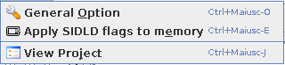
General Options
Option
Here you can changes various option about the disassembler engine:
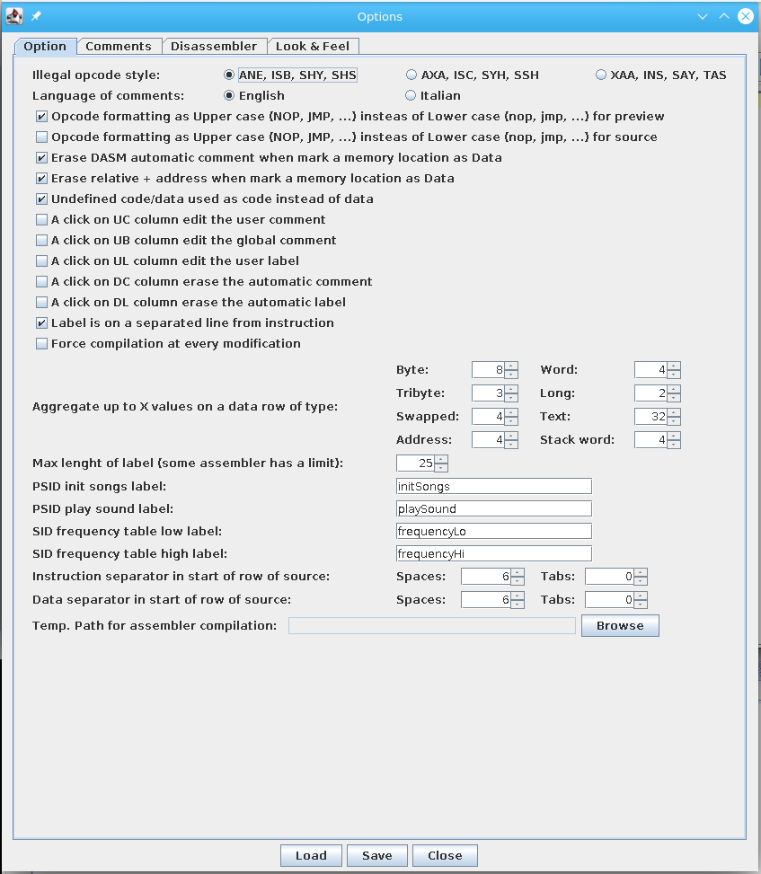
- Illegal opcode style: changes the mode as undocument instructions are called as they are not standard:
- ANE, ISB, SHY, SHS: Mode use by John west and Marko M"akel"a
- AXA, ISC, SYH, SSH: Mode use by Juergen Buchmueller
- XAA, INS, SAY, TAS: Mode use by Adam Vardy
- Language of comments: automatic comments added by disassembler engine can be in English or Italian
- Memory value in left panel: select the format from exadecimal or char for the value in the merory panel table
- Type of dots (sprite/char) in comment: select to use ASCII chars or UTF16 chars for dots of sprites/chars used in comment to show the outfit
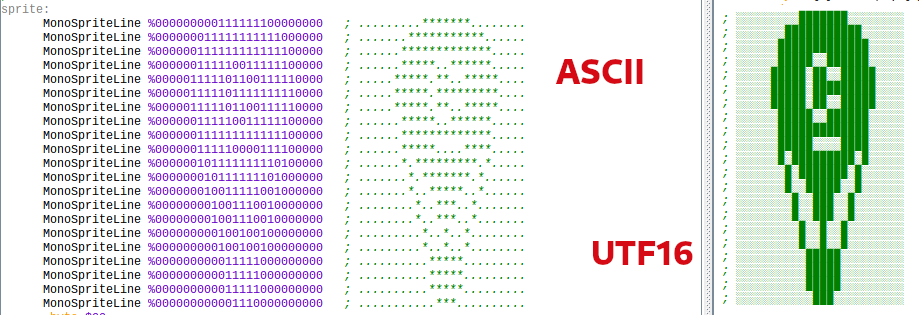
- Opcode formatting as Upper case (NOP, JMP, ...) insteas of Lower case (nop, jmp, ...) for preview: in preview of source uses upper or lower text case formatting
- Opcode formatting as Upper case (NOP, JMP, ...) insteas of Lower case (nop, jmp, ...) for source: in source uses upper or lower text case formatting
- Erase disassembler automatic comment when mark a memory location as Data: when you mark a memory location as data you can choose if the automatic comment (that is assed for code) should be erased as not more useful
- Erase relative + address when mark a memory location as Data: as relative plus association are done in automatic onto code, you can choose that it will be erased if you mark the memory location as of data
- Undefined code/data used as code instead of data: select how undefinde memory location should be managed (code or data)
- A click on UC column edit the user comment: activate an alterative way to add/edit user comment
- A click on UB column edit the global comment: activate an alterative way to add/edit global comemnt
- A click on UL column edit the user label: activate an alternative way to add/edit user label
- A click on DC column erase the automatic comment: activate an alternative way to delete automatic comment
- A click on DL column erase the automatic label: activate an alternative way to delete automatic label
- A click on VL column allow to patch the value: activate a fast way to add patch
- Label is on separate line from instructio: chnage the way a label is showed inside the code
- Force compilation at every modification: at every modification you made the source is generated again. Takes present that in long source code the bottleneck is probably the highlighting of it in preview and source panel rather that the source generation itself
- Allow UTF chars in text/char definitions: UTF char are used if they compile back to right binary code
- Repositionate memory from preview after compilation: current position in preview is used to repositionate in memory if it is on an address after the commpilation
- Allow result message for load/save: show the result of loading and saving operation
- Code with undocument opcodes are forced to be of data type: automatically force code to be data to avoid the use of illegal opcodes
- Show miniature scrollbars: use a right miniature of the source dor better slelecting area
- Merge adjacent blocks: merge blocks that intersect, for a better disassembly
- Project file chooser shows colored icons based onto % of disassembly: this slow down the file opening when there are manu files in the directory, but the colored icons gives an idea of percentual of disassembly (it is not precise for being quick)
- Show SIDid player information: use the Sidid.cfg for showing the player if it is recognized
- Create PSID header: create values in source for regenerating the binary as a PSID file and not PRG for tune.
- Did not create PSID labels: not generate the automatic labels for PSID init and play addresses.
- Create SAP heather: create values in source for regenerating the binary as a SAP file and not PRG for tune.
- Did not create SAP labels: not generate the automatic labels for SAP init and play addresses.
- Use SID Frequency catcher: scan memory for music notes table
- Mark memory: mark the memory as of data type
- Set labels: set the labels of low/high pointer of music table
- Set comments: set comments about A4 frequency used in table
- Source heather: select the heather to put in source
- Standard: use standard information with program version
- None: never use heather
- Custom (below):use the text inserted into the box
- Aggregate up to X values on a data row of type: data memory locations will be grouped in group automatically of some bytes
- Byte: aggregate bytes from 2 to 8
- Word: aggregate words (2 bytes) from 2 to 8
- Tribyte: aggregate tribytes (3 bytes) from 2 to 8
- Long: aggregate longs (4 bytes) from 2 to 8
- Swapped: aggregate swapped (2 bytes) from 2 to 8
- Text: aggregate text (some bytes) from 2 to 40
- Address: aggregate address (2 bytes( from 2 to 8
- Stack Word aggregate stack word (2 bytes) from 2 to 8
- Max lenght of label (some assembler has a limit): fix the max length of a label you can insert (minimun is fixed to 6) so you are sure to not go over the limitation of some assembler
- PSID/SAP init songs label: as Psid has a init routine to call, this label will be used automatically by disassembler engine as a user label definition (so you can't change it with label creation function)
- PSID/SAP play sound label: as Psid has a play routine to call, this label will be used automatically by disassembler engine as a user label definition (so you can't change it with label creation function)
- SID frequency table low label: automatically detect a frequency table low part and create this user label for it (see the note at the end of this section)
- SID frequency table high label: automatically detect a frequency table high part and create this user label for it (see the note at the end of this section)
- Instruction sepatarator in start of row of source: select how many spaces/tabs you want to separate an instruction into the source from the beginning of row
- Data separator in start of row of source: select how many spaces/tabs you want to separate an data declarationb from the beginning of row
- Comment separator inside instruction in source: select how many spaces/tabs you want to separate a comment into the source with an instruction
- Comment separator inside data in source: select how many spaces/tabs you want to separate a comment into the source with a data
- Separator from opcode and operand in source: select how many spaces/tabs you want to separate opcode and operand. Due to the different length of opcode in processors, with 1 or 2 spaces it can break the aligment. Optimal minimal is 2 for M6502 and 3 for Z80.
- Font size for editor: select the font size for preview and source text.
- Temp path for assembler compilation: a path used for generating the binary of assembler. The best way is to use a memory drive (/tmp in most of Linux ditribution for example) as the generated files are to be considearte temporary
- SIDid configuration file: the path to the Sidiid.cfg file used by SIDid program to determine the player
The disassembler engine used the SidFreq class implemented in XSidplay2 for detecting the A4 frequency that a tune is playing by searching in memory for the low and high part of table frequency of the octaves the SID can play.
Where such area is find, it will be marked ad data kind and the label for low and high position are generated as user label and a comment is added for giving the A4 frequency information
From version 1.6 the engine is called multiple times to find possible more blocks of notes data. In such cases, the label will then be marked with index, 1, 2, 3...
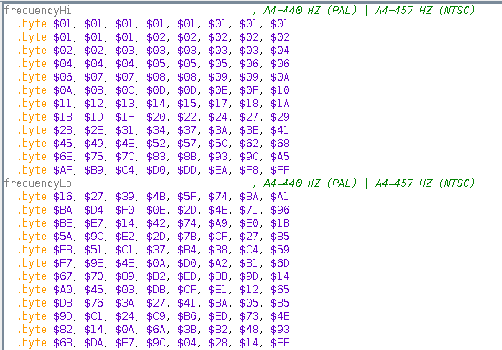
Comments
Here you can select what kind of memory address can be used for generating an automatic comments for the given architecture:
- C64:
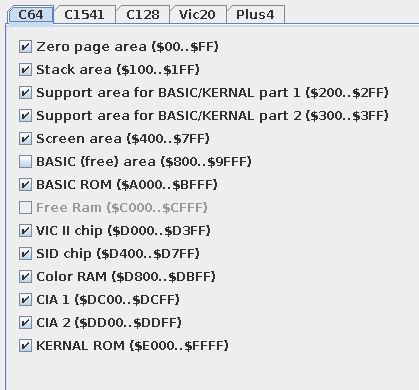
- C1541:
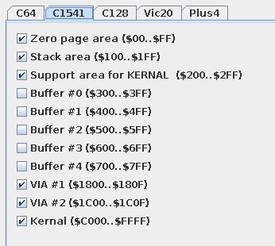
- C128:
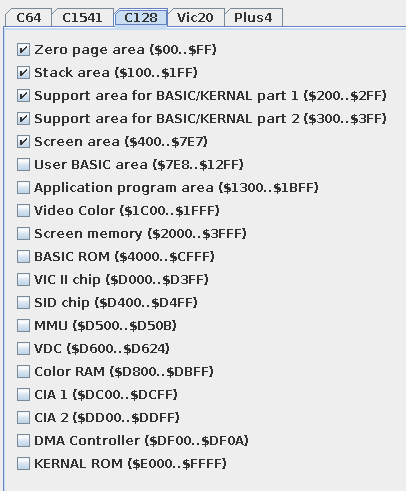
- VIC20:
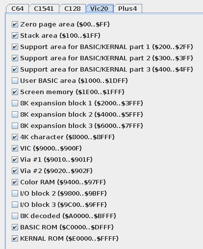
- PLUS4:
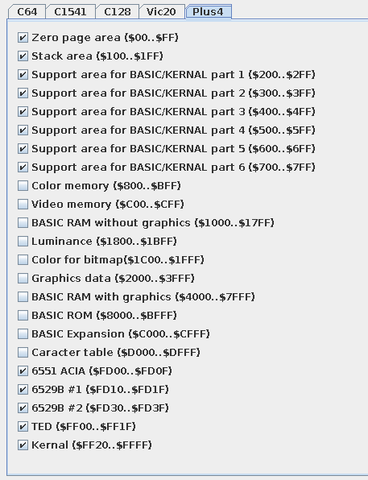
- ATARI:
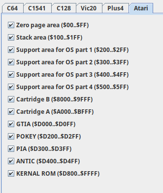
- ODYSSEY:
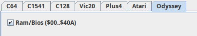
Disassembler
Here you activate the assembler to use and so the corresponding syntax format for the source code
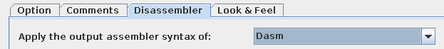
The option varies from assembler to assembler and are divided into:
- Starting: starting directiver for compilation
- Origin: the kind of syntax for declaring an origin memory zone
- Comment: the sysntax for declaring a instrction comment
- Block comment: the syntax for declaring a block comment
- Label: the syntax for declaring a label. Always a label start from the first column of row even if some assembler support starting in other columns
- Byte: the syntax for declaring a byte. It shows the four kind of way you can define a byte area, but you cannot differentiate the synstax throw the different methods
- Word: the syntax for declaring a word
- Word swapped: the syntax for declaring a word swapped. For compatibility with assemblers that not support this kind of data, in that case a macro is used
- Tribyte: the syntax for declaring a tribyte (3 bytes). For compatibility with assemblers that not support this kind of data, in that case a macro is used
- Long: the syntax for declaring a long (4 bytes). For compatibility with assemblers that not support this kind of data, in that case a macro is used
- Address: the syntax for declaring and address. For compatibility with assemblers that not support this kind of data, in that case a word is used
- Stack Word: the syntax for declaring a stack word. For compatibility with assemblers that not support this kind of data, in that case a macro is used
- Monocolor sprite: the syntax for declaring a monocromatic sprite. It uses bytes unless tribytes are available or macros
- Multicolor sprite: the syntax for declaring a multicolor sprite. It uses bytes unless tribyte are avaialble or macros
- Text: the syntax for declaring a text area
- Text with # of char before: the syntax for declaring a text where the number of char is the first byte. If the assembler did not support this it is managed as normal text
- Text 0 terminated: the syntax for declaring a text that terminate with a zero byte. If the assembler did not support this it is managed as normal text
- Text '1' terminated: the syntax for declaring a text that termintate with the high bit to 1. If the assembler did not support this it is managed as normal text
- Text left shifted: the syntax for declaring a text that is left shifted by 1 bit. If the assembler did not support this it is managed as normal text
- Text to screen code: the syntax for declaring a text that uses screen code. If the assembler did not support this it is managed as normal text
- Text to petascii code: the syntax for declaring a text that uses petascii code. If the assembler did not support this it is managed as normal text
- Dasm
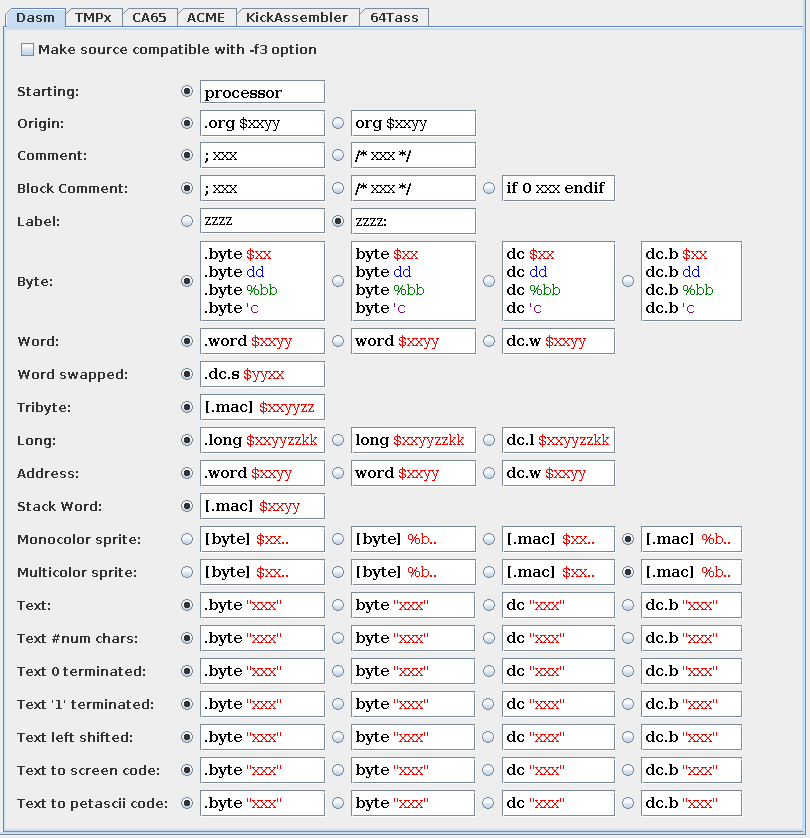
Dasm has an option for making the source compatible with the -f3 option that is to produce a SID file in PSID format correctly.
- TMPX
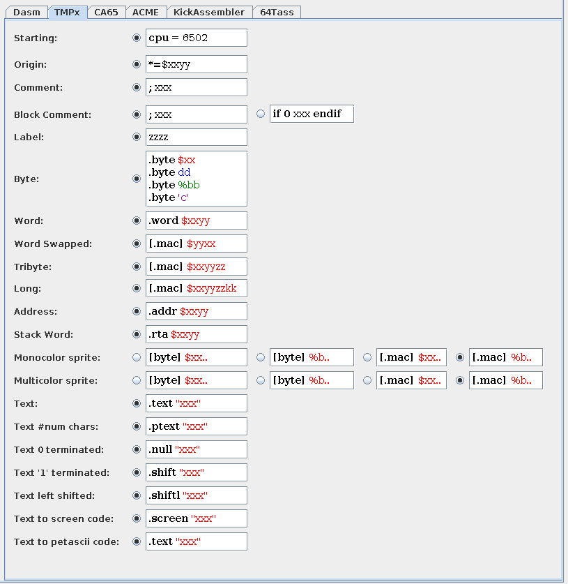
- CA65
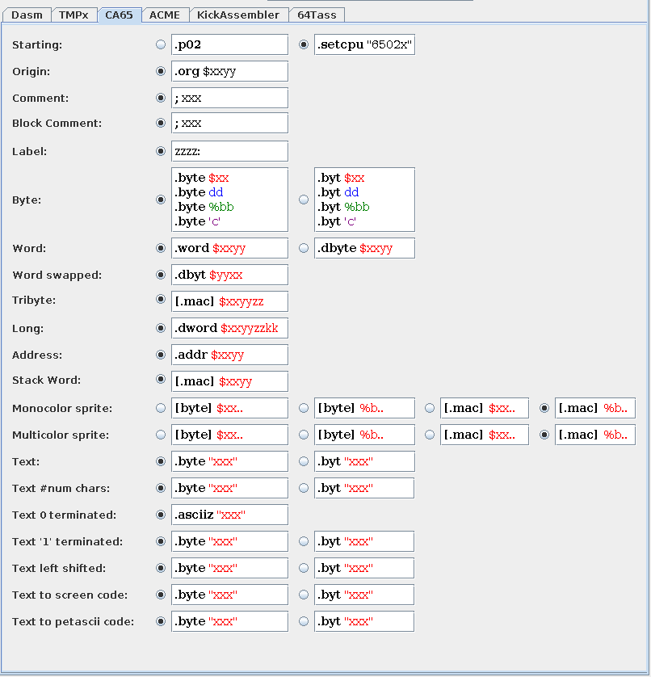
- ACME
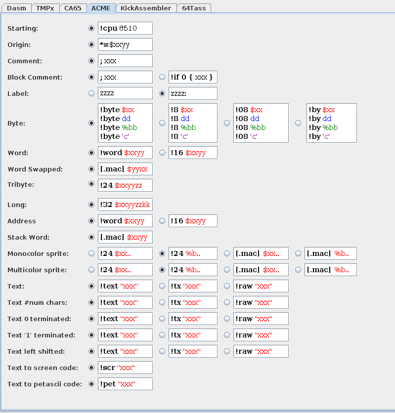
- Kick Assembler
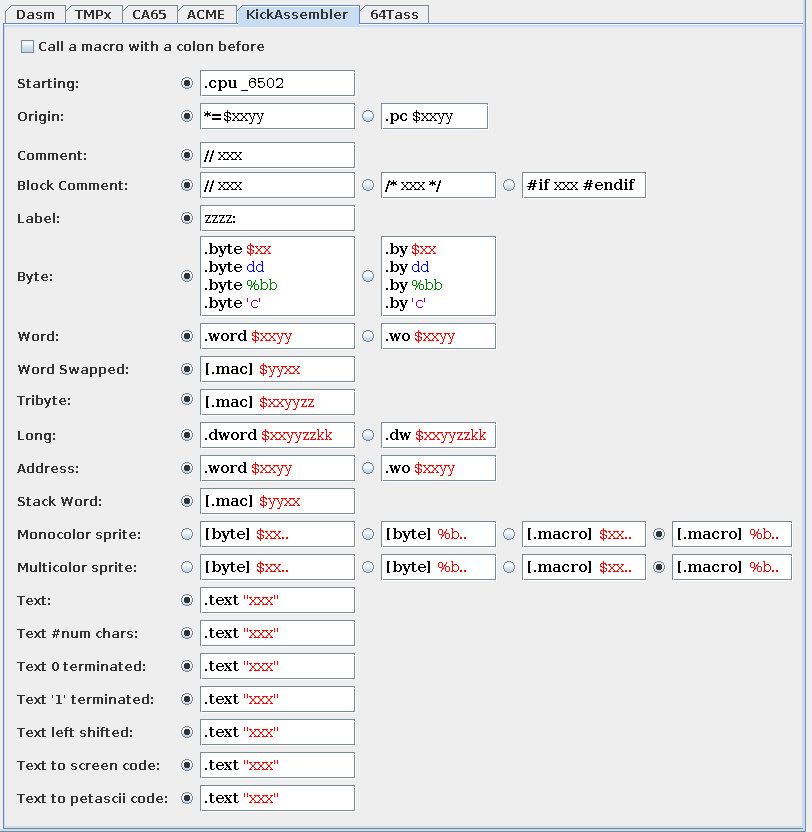
Kicx assembler has an option for calling a macro with a colon before if actviated.
- 64Tass
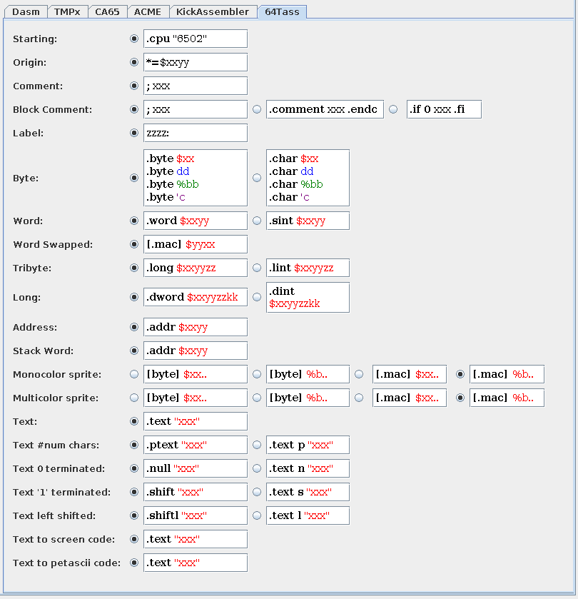
- Glass
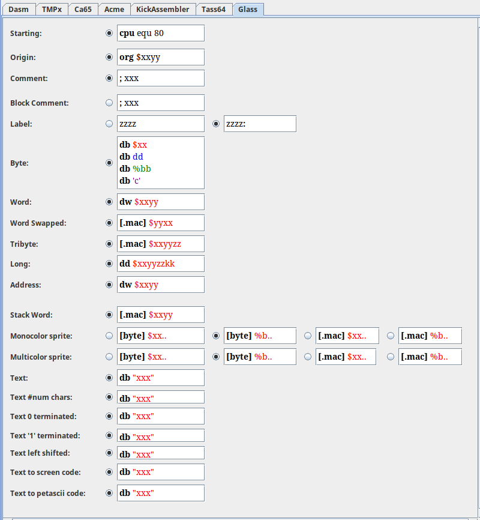
- AS
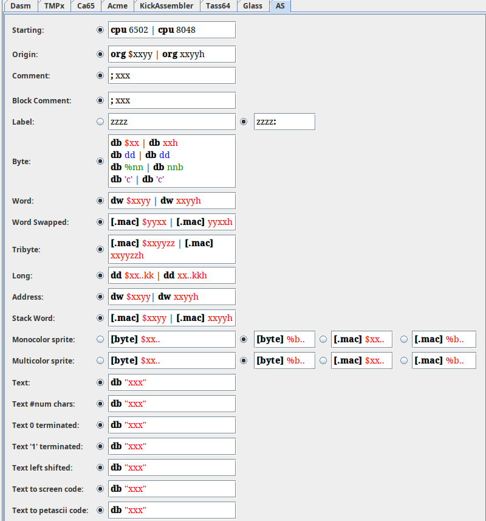
Look & Feel
Here you can changes the look & feel of the program:
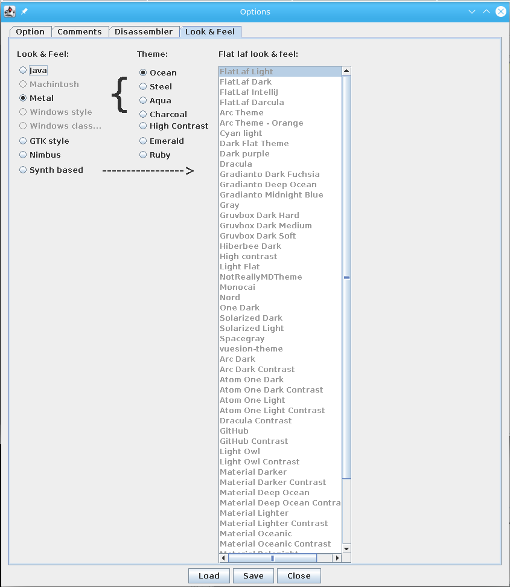
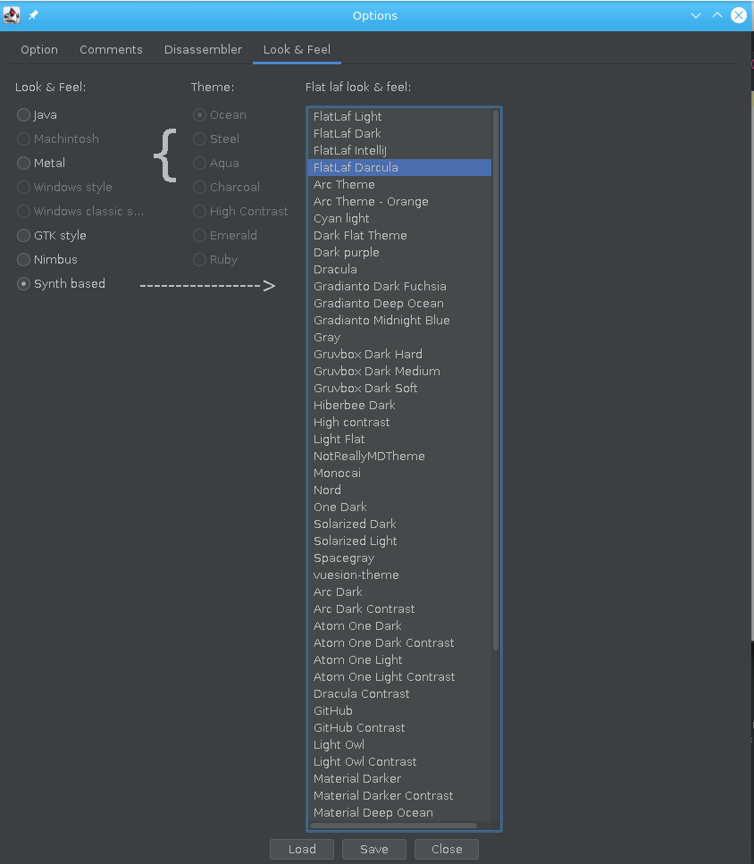
According with you kind of system, you can select one of those Look & Feel:
- Java
- Machintosh
- Metal (that allow you to choose from 7 themes)
- Windows style
- Windows classical style
- GTK style
- Nimbus
- Synth based (that allow you to choose from more that 55 flat laf)
And those themes for syntax highlight editors:
- Default
- Default alternative
- Dark obsidian
- Druid
- Eclipse
- Intellij Idea
- Monokai
- Visual Studio
SIDFreq
Here you can select what kind of table the SID frequency catcher has to use
Apply SIDLD flags to memory
We saw that for a project you can add some files of SIDLD that has the code/data attribution about memory locations by true playback of the SID tune.
If you had such files you can apply the attribution with this function. It is manual as otherwise it will prevent you to change a data/code area by hand if it is applyed at every disassambly.
The right way to use it is so to apply it on the fitst time, otherwise it can overwrite your memory/code previous selection.
View Project
This menu will open the dialog box used for creating the project.
Here you can still going to add other SIDLD files or changing the file to disassemble.
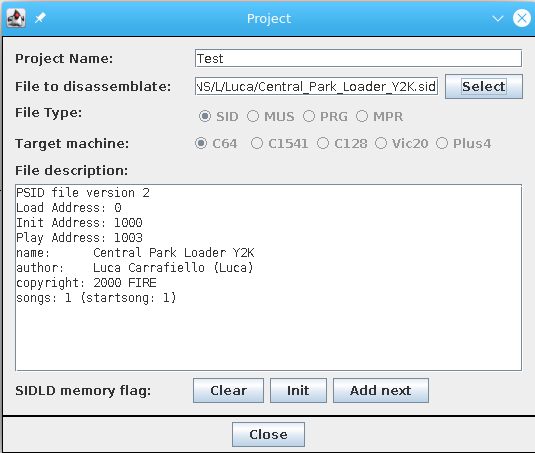
View Labels
This menu will open the dialog box that lists all the labels used into the disassambly.
With click onto a line, that memory address will be selected into the principal memory table. A Ctrl+ doucle click will positionate (if possible) event the source preview in that line
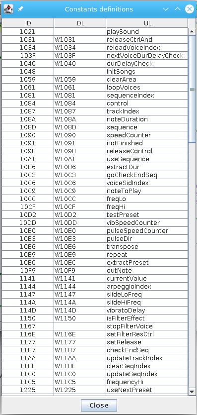